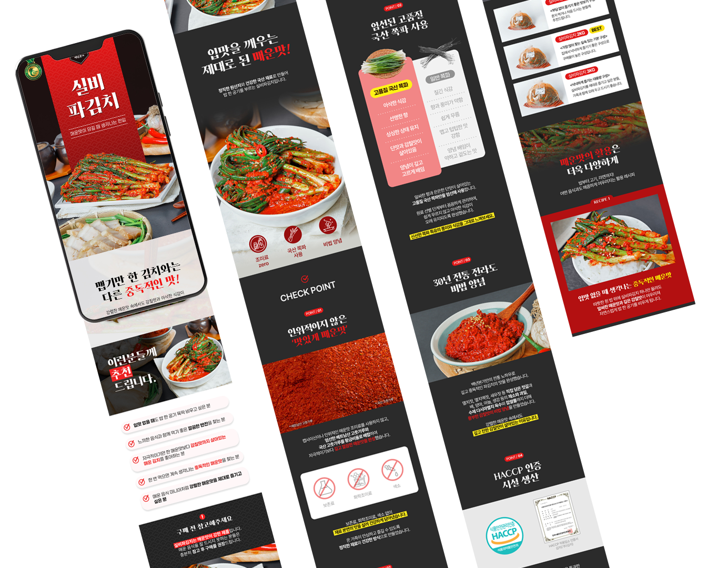
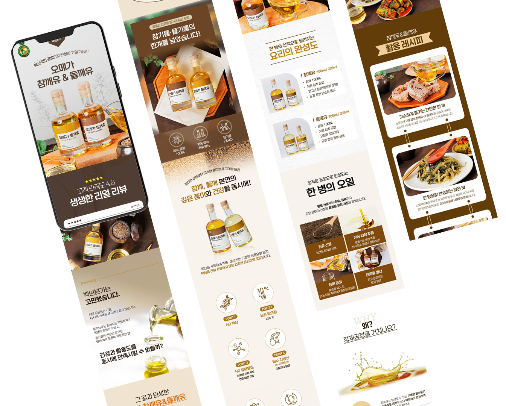
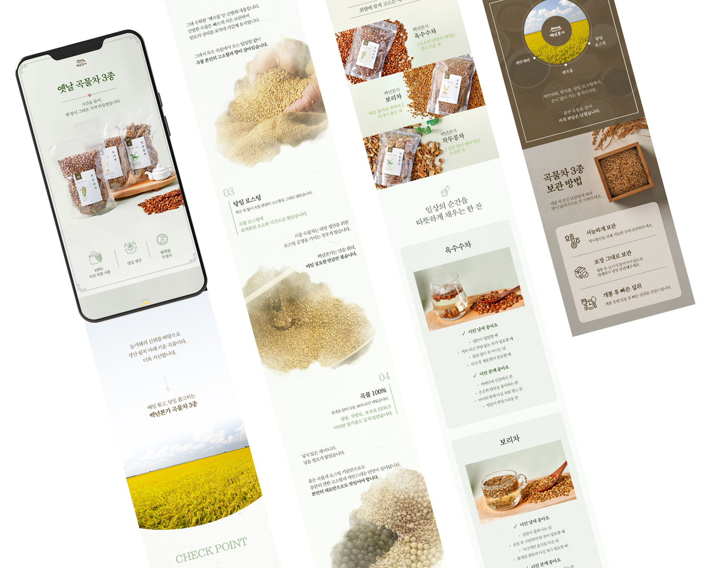
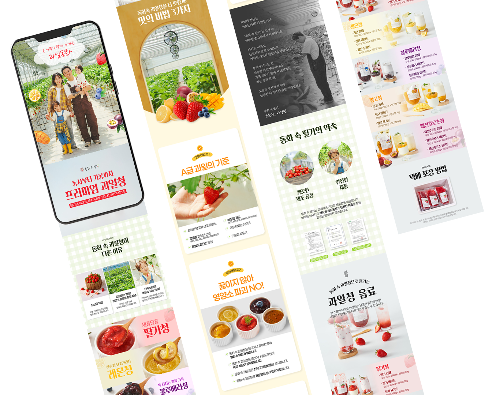
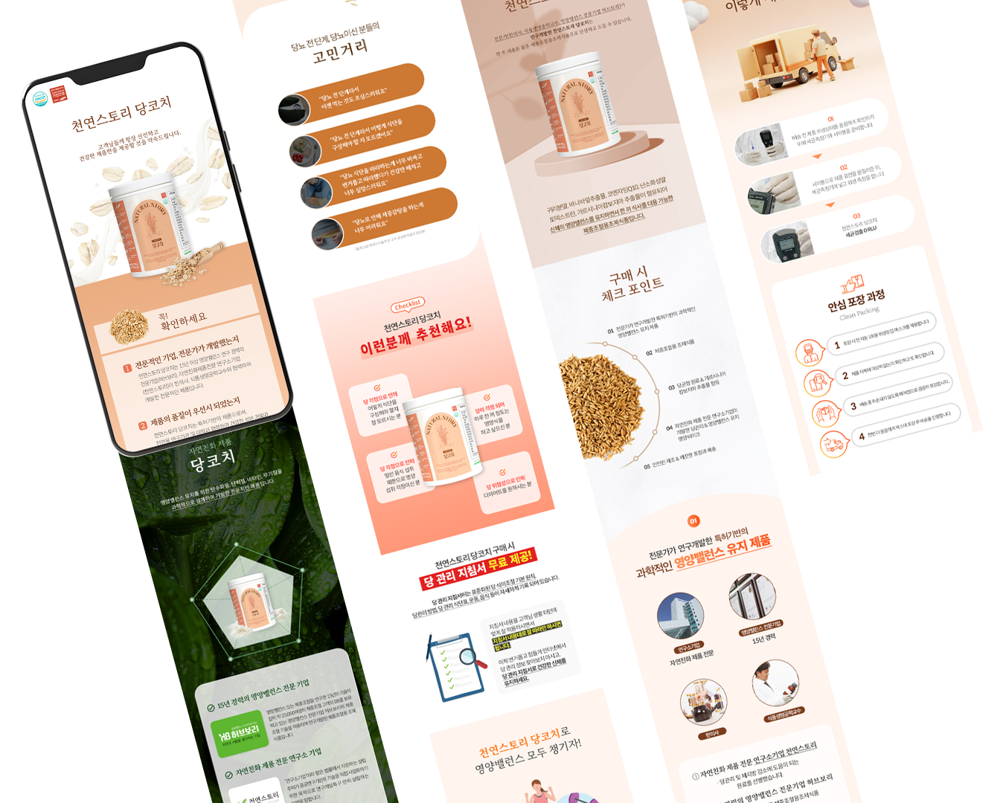

DETAILPAGE DESIGN
가공식품·생활식품 상세페이지
매운맛을 강조하는 컬러와 그래픽을 활용하여
제품의 강렬한 매력을 표현하였으며,
원재료와 맛의 특징을 직관적으로 전달하도록 구성했습니다.

프로그램


매운맛을 강조하는 컬러와 그래픽을 활용하여
제품의 강렬한 매력을 표현하였으며,
원재료와 맛의 특징을 직관적으로 전달하도록 구성했습니다.
프로그램

참깨유와 들깨유의 차이점을 한눈에 비교할 수 있도록 구성하고,
고소한 이미지를 강조하는 따뜻한 색감으로 디자인했습니다.
프로그램

각 차의 원재료와 효능을 보기 쉽게 정리하고,
자연스러운 색감과 여백을 활용하여 편안하고
신뢰감 있는 분위기를 표현했습니다.
프로그램

과일별 컬러를 활용하여 제품을 쉽게 구분할 수 있도록 구성하였으며,
다양한 활용 방법과 제품의 특징을 시각적으로 전달했습니다.
프로그램

건강하고 균형 잡힌 이미지를 전달하기 위해 깔끔한 레이아웃과
부드러운 색감을 적용하였으며,
원료와 섭취 방법을 쉽게 이해할 수 있도록 디자인했습니다.
프로그램
